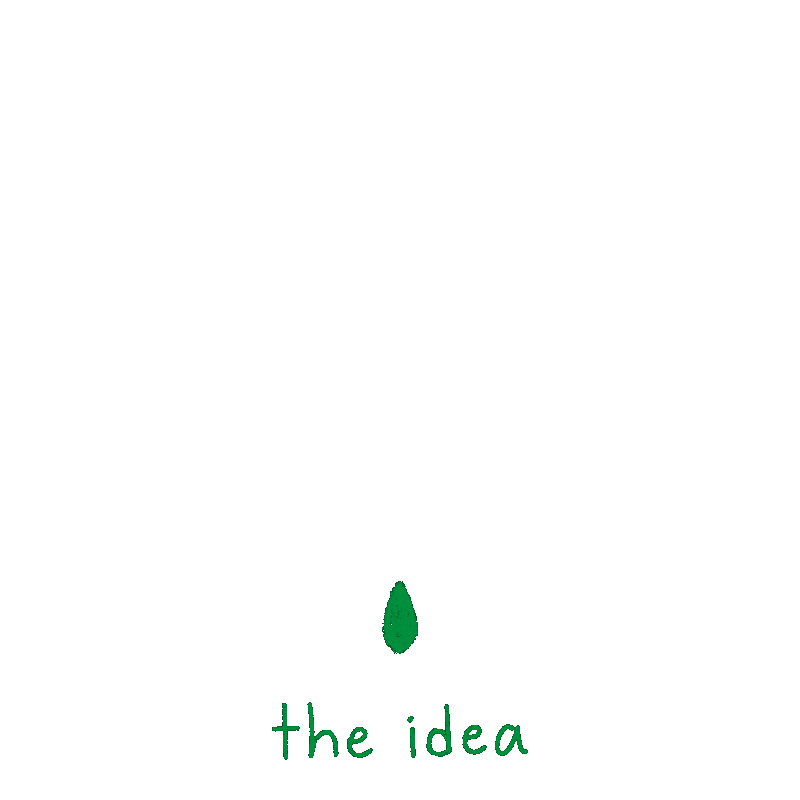
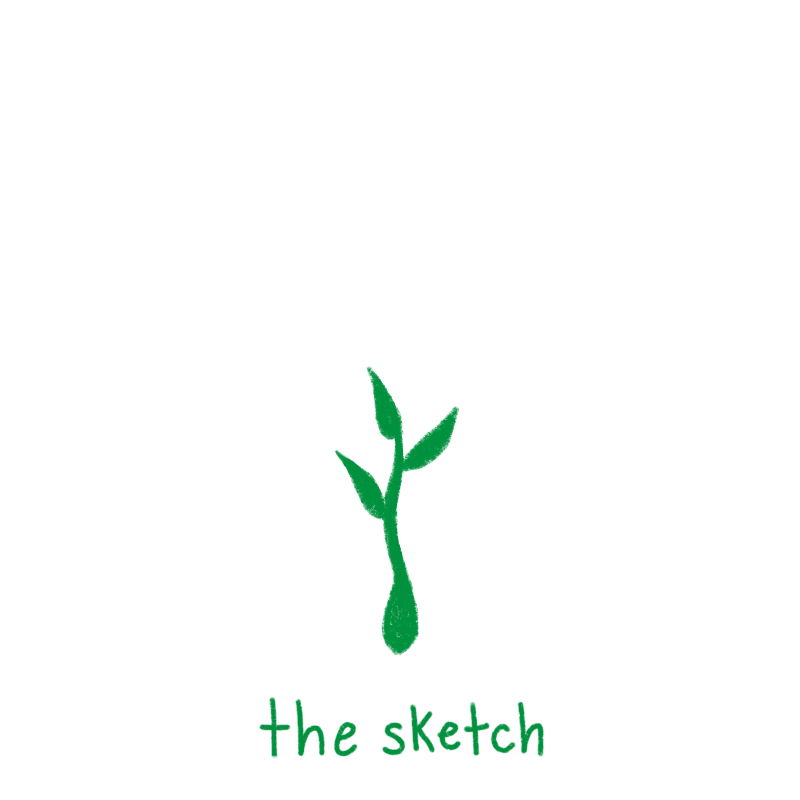
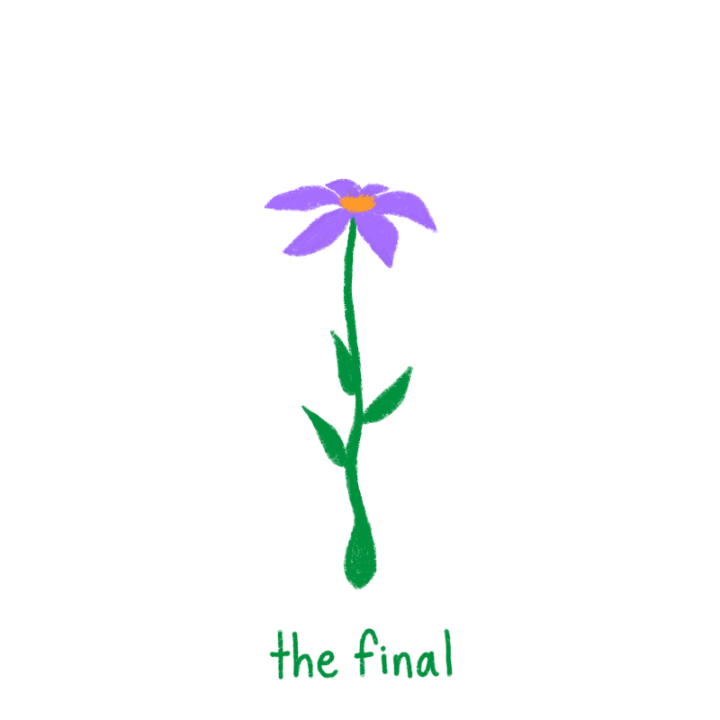
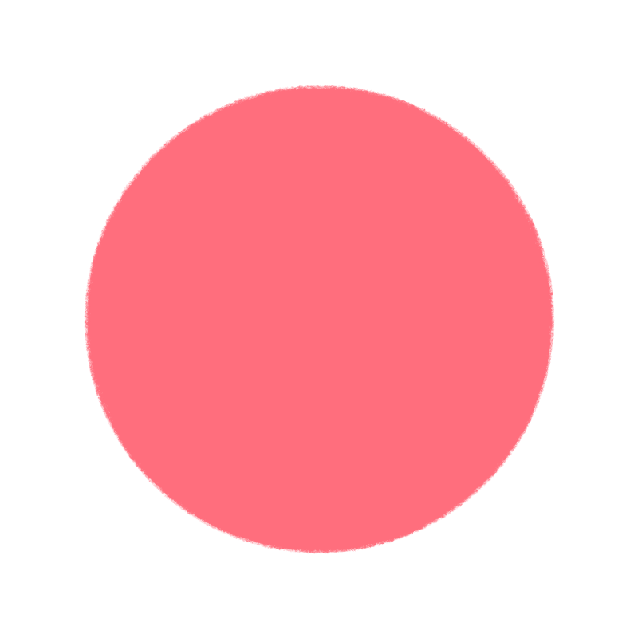
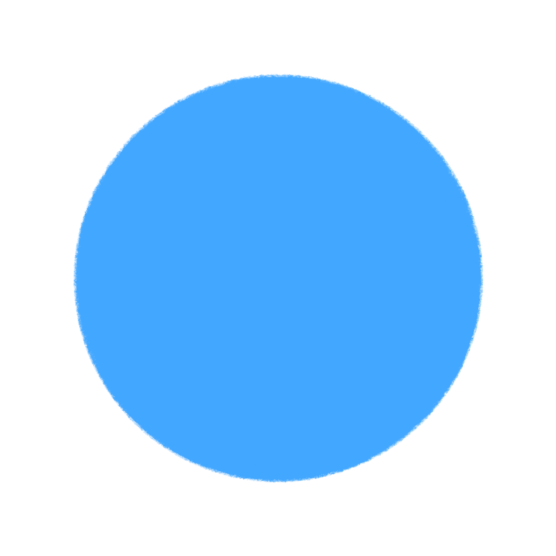

Why make anything?

Creativity doesn’t have to be so daunting.
Make things for the sake of making them!
They don’t even have to be good by anyone else’s standards.
Make ugly things!
Make cool things!
It's all part of the process.



10 things that are good to make:
- Bread shaped like animals, very cute, very creative, very good. 
- A handprint painting. Nothing is more fun than putting paint all over your hand and making your mark. Activates caveman brain. 10/10.
- Pesto. That’s all. 
- Little clay things. If they’re kind of creepy looking, bury them in your backyard as a nice surprise for anyone who owns your house in the future :).
- Uhhhhhhhhhhhhhhhhhhhhh those weird blind contour drawings. Those are always a great way to humble yourself.
- Stuffed animals made of socks. Make them as ugly as humanly possible.
- Handwritten madlibs. Make them serious or silly, but they’ll almost certainly turn out silly. There’s nothing you can do about that.
- Homemade pasta. It may taste gross, but you’ll feel like a lovely old Italian man with one of those mustaches that curls at the end. You know the one.
- A drawing of your favorite movie villain but give them sunglasses to make them cooler.
- A list of bad ideas/ mistakes. Look back at your old mistakes, laugh, and make sure you don’t accidently repeat them. Only repeat mistakes on purpose. Duh! 